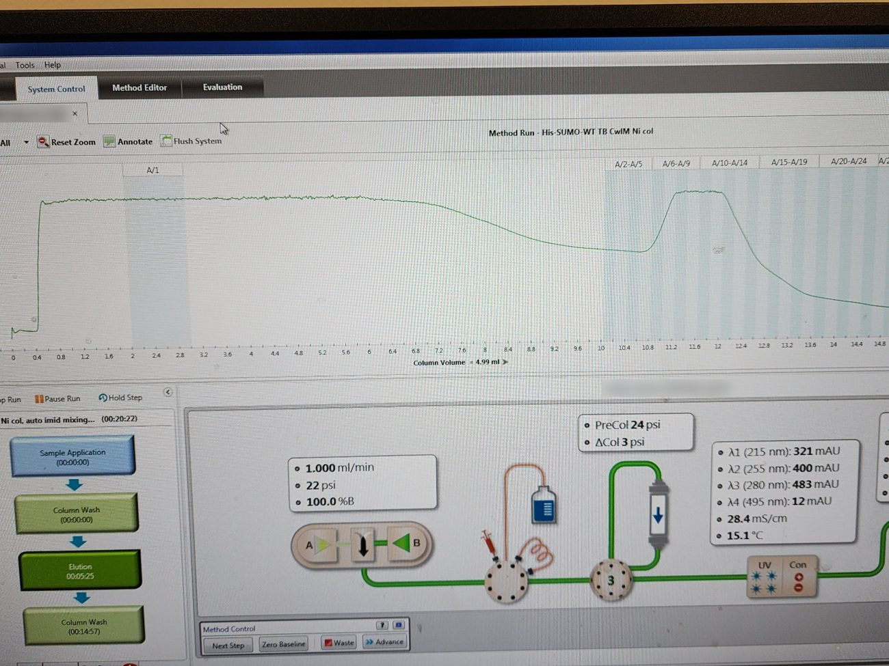
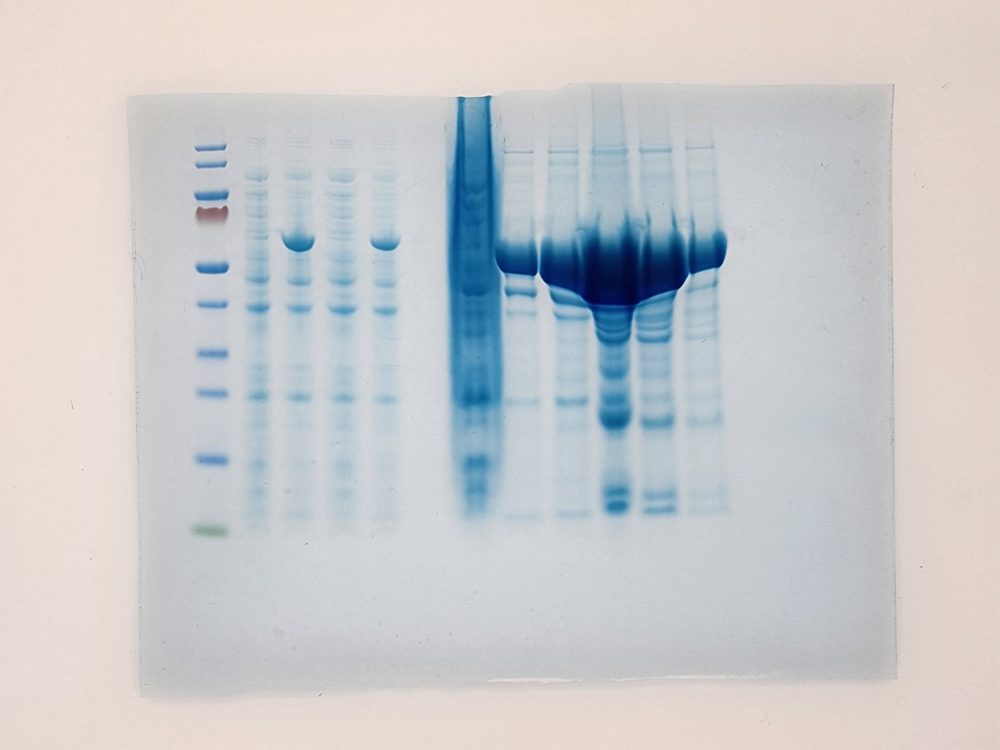
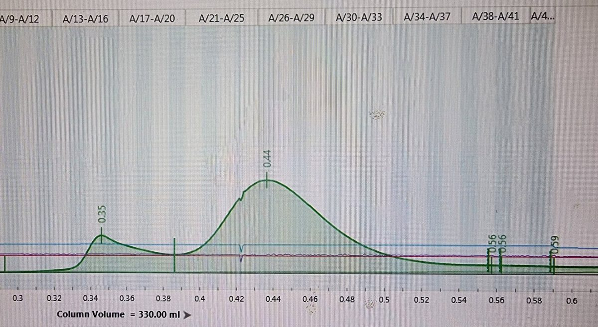
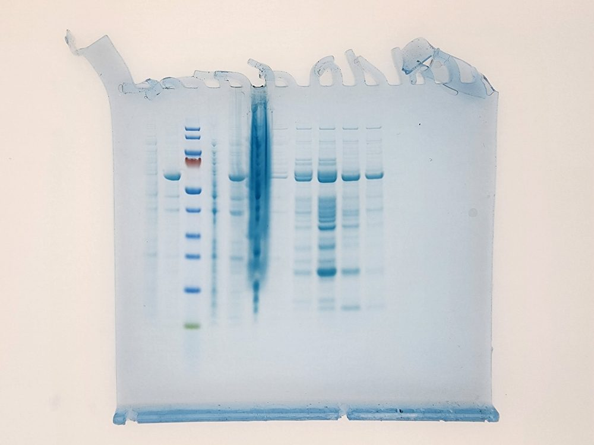

His-SUMO-tagged protein purification (Ni-NTA, dialysis, SEC), example CwlM
Express in BL21, lyse by sonication, purify on Ni-NTA by FPLC, dialyze, polish by size-exclusion chromatography. Example: His-SUMO-CwlM (~56 kDa).
Overview
Plasmid: pET His-SUMO-CwlM, stored in a cloning strain. Miniprep the vector, then transform into chemically competent E. coli BL21 (Codon Plus) each time and use a single colony for the starter. Select with ampicillin (140 µg/mL) in LB.
1. Expression
- Induce 1L of culture with 1.3 mM IPTG at 18 °C overnight with shaking (220 rpm, in 4L flask).
- Pellet at 5,000 [rpm] for 20 min and store pellets at –20 °C.
- Record OD₆₀₀ before and after induction and keep 50–100 µL of each in Laemmli buffer to confirm induction on a gel.
2. Lysis (sonication)
Wash buffer: 50 mM Tris pH 8, 350 mM NaCl, 10 mM imidazole, 10% glycerol, 1 mM DTT (add fresh).
- Thaw pellets on ice and resuspend in 20–50 mL wash buffer. Add a pinch of lysozyme; 30 min on ice.
- Sonicate 35 s at 40% amplitude, 30 s rests, 15 cycles.
- Spin 13,000 rpm, 25 min. Keep samples of supernatant and (resuspended) pellet in Laemmli.
3. Ni-NTA by FPLC
Use filtered, degassed buffers. If the supernatant is cloudy, syringe-filter it before loading.
- Equilibrate: 1.25 CV wash buffer
- Wash: 3 CV wash buffer, then a 1.25 CV gradient 0–100% elution buffer
- Elute: 3 CV elution buffer (wash buffer with 250 mM imidazole)
4. Check fractions
Run flow-through, wash and elution fractions with supernatant and pellet samples on a 12% SDS gel. His-SUMO-CwlM runs at ~56 kDa.


5. Dialysis
Dialyze the eluate overnight against wash/elution buffer with no imidazole.
6. Size-exclusion chromatography (SEC)
- NanoDrop the dialyzed protein (blank: dialysis buffer) and keep a gel sample.
- Load on SEC (column should be on SEC buffer: 50 mM Tris pH 8, 350 mM NaCl, 10% glycerol, 1 mM DTT); equilibrate 1.25 CV; elute 1.25 CV.
- Run fractions on a gel, pool the clean ones, concentrate to 1 mg/mL at least, NanoDrop to confirm , adjust glycerol to 10% final, re-measure, flash freeze 10-100 µL aliquots in liquid nitrogen and store at –80 °C.


protein purificationHis-SUMONi-NTAFPLCSECCwlM